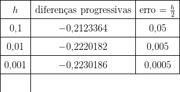
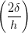
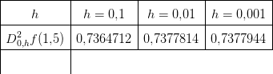

Cálculo Numérico
Um Livro Colaborativo
7.1 Derivação Numérica
Dado um conjunto de pontos (xi,yi)i=1n, a derivada  i pode ser calculada de
várias formas. Na próxima seção trabalharemos com diferenças finitas, que é mais
adequada quando as abcissas estão próximas e os dados não sofrem perturbações
significativas. Na seção subsequente trataremos os casos quando os dados oscilam
via ajuste ou interpolações de curvas.
i pode ser calculada de
várias formas. Na próxima seção trabalharemos com diferenças finitas, que é mais
adequada quando as abcissas estão próximas e os dados não sofrem perturbações
significativas. Na seção subsequente trataremos os casos quando os dados oscilam
via ajuste ou interpolações de curvas.
7.1.1 Aproximação da derivada por diferenças finitas
A derivada f′(x0) de uma função f(x) no ponto x0 é
Da definição, se h≠0 é pequeno (não muito pequeno para evitar o cancelamento
catastrófico), é esperado que uma aproximação para a derivada no ponto x0 seja
dada por:
 | (7.1) |
Exemplo 7.1.1. Calcule a derivada numérica da função f(x) = cos(x) no
ponto x = 1 usando h = 0,1, h = 0,01, h = 0,001 e h = 0,0001.
Solução. Usando a fórmula de diferenças dada pela Equação (7.1), devemos
calcular:
para cada valor de h solicitado. Fazendo isso, obtemos a seguinte tabela:
No Scilab, podemos calcular a aproximação da derivada f′(1) com h = 0,1
usando as seguintes linhas de código:
deff(’y = f(x)’,’y = cos(x)’)
x0 = 1
h = 0.1
dp = (f(x0+h) - f(x0))/h
E, similarmente, para outros valores de x0 e h. ♢
Observe que, no exemplo anterior, quanto menor h, melhor é a aproximação,
visto que o valor exato para a derivada é f′(1) = − sin(1) = −0,8414710.
Porém, quando h = 10−13, a derivada numérica é −0,8404388 (usando
aritmética double), resultado pior que aquele para h = 0,0001. Além disso, na
mesma aritmética, quando h = 10−16 a derivada numérica calculada é zero
(cancelamento catastrófico). Isso nos motiva a pensar qual é o melhor
h.
Essa aproximação para a derivada é denominada diferenças progressivas.
A derivada numérica também pode ser aproximada usando definições
equivalentes:
 que
é denominada diferenças regressivas ou
que
é denominada diferenças regressivas ou
 que
é denominada diferenças centrais.
que
é denominada diferenças centrais.
Exemplo 7.1.2. Calcule a derivada numérica da função f(x) = cos(x)
no ponto x = 1 usando diferenças progressivas, diferenças regressivas e
diferenças centrais com h = 0,1, h = 0,01 e h = 0,001.
Solução. A tabela abaixo mostra a derivada numérica para cada valor de
h.
|
|
| Diferenças | h=0,1 |
|
|
| Progressivas | −0,8670618 |
| Regressivas |  = −0,8130766 = −0,8130766 |
| Centrais |  = −0,8400692 = −0,8400692 |
|
|
| Diferenças | h=0,01 |
|
|
| Progressivas | −0,8441584 |
| Regressivas |  = −0,8387555 = −0,8387555 |
| Centrais |  = −0,8414570 = −0,8414570 |
|
|
| Diferenças | h=0,01 |
|
|
| Progressivas | −0,841741 |
| Regressivas |  = −0,8412007 = −0,8412007 |
| Centrais |  = −0,8414708 = −0,8414708 |
|
|
| |
♢
7.1.2 Erros de truncamento
Seja D+,hf(x0) a aproximação da derivada de f em x0 por diferenças
progressivas, D−,hf(x0) a aproximação por diferenças regressivas e D0,hf(x0) a
aproximação por diferenças centrais, então
Analogamente: Também:
| D0,hf(x0) − f′(x0) | =  − f′(x0) − f′(x0) | |
|
| =  | |
|
| − − f′(x0) − f′(x0) | |
|
| = O(h2). | | |
Exemplo 7.1.3. Calcule a derivada numérica e o erro de truncamento de
f(x) = e−x em x = 1,5 pela fórmula de diferença progressiva para h = 0,1,
h = 0,01 e h = 0,001.
Solução. Como |f′′(x)| = |e−x| < 1, então |f′
+(x0) − f′(x0)| <  .
.
 O valor exato da derivada é
f′(1,5) = −0,2231302.
♢
7.1.3 Erros de arredondamento
Para entender como os erros de arredondamento se propagam ao calcular as
derivadas numéricas vamos considerar o operador de diferenças finitas
progressivas
 Nesse contexto temos o valor exato f′(x) para a derivada, a sua aproximação
numérica D+,hf(x) e a representação em número de máquina do operador
D+,hf(x) que denotaremos por D+,hf(x). Seja ε(x,h) o erro de arredondamento
ao calcularmos a derivada e consideremos
Nesse contexto temos o valor exato f′(x) para a derivada, a sua aproximação
numérica D+,hf(x) e a representação em número de máquina do operador
D+,hf(x) que denotaremos por D+,hf(x). Seja ε(x,h) o erro de arredondamento
ao calcularmos a derivada e consideremos
 Também, consideremos
Também, consideremos
 e
e
 onde f(x + h) e f(x) são as representação em ponto flutuante dos números
f(x + h) e f(x), respectivamente. A diferença do valor da derivada e sua
aproximação representada em ponto flutuante pode ser estimada da seguinte
forma:
onde f(x + h) e f(x) são as representação em ponto flutuante dos números
f(x + h) e f(x), respectivamente. A diferença do valor da derivada e sua
aproximação representada em ponto flutuante pode ser estimada da seguinte
forma:
 | =  | |
|
| =  | |
|
| +  | |
|
| =  | |
|
| +  | |
|
| ≤ + +  | |
|
| +  |1 + ε| + |1 + ε| +  ε ε | |
|
| ≤ Mh +  |1 + ε| + |f′(x)|ε |1 + ε| + |f′(x)|ε | |
|
| ≤ Mh + |1 + ε| + |f′(x)|ε | | |
onde
 está relacionado com o erro de truncamento.
está relacionado com o erro de truncamento.
Esta estimativa mostra que se o valor de h for muito pequeno o erro ao
calcular a aproximação numérica cresce. Isso nos motiva a procurar o valor ótimo
de h que minimiza o erro.
Exemplo 7.1.4. Estude o comportamento da derivada de f(x) = e−x2 no
ponto x = 1,5 quando h fica pequeno.
Solução. Segue a tabela com os valores da derivada para vários valores de
h.
Observe que o valor exato é −0,3161977 e o h ótimo é algo entre 10−8 e
10−9. ♢
7.1.4 Aproximações de alta ordem
Para aproximar a derivada de uma função f(x) em x0, x1 ou x2 usaremos os três
pontos vizinhos (x0,f(x0)), (x1,f(x1)) e (x2,f(x2)). Uma interpolação usando
polinômios de Lagrange para esses três pontos é da forma:
| f(x) | = f(x0) + f(x1) + f(x1) | |
|
| + f(x2) + +  (x − x0)(x − x1)(x − x2). (x − x0)(x − x1)(x − x2). | | |
A derivada de f(x) é
 | (7.2) |
Trocando x por x0, temos
Considerando uma malha equiespaçada onde x1 = x0 + h e x2 = x0 + 2h,
temos:
Similarmente, trocando x por x1 ou trocando x por x2 na expressão (7.2), temos
outras duas expressões
Podemos reescrever as três fórmulas da seguinte forma: ou ainda Observe que uma das fórmulas é exatamente as diferenças centrais obtida
anteriormente.
Analogamente, para construir as fórmulas de cinco pontos tomamos o
polinômio de Lagrange para cinco pontos e chegamos a cinco fórmulas, sendo uma
delas a seguinte:
![4
f′(x0) = -1--[f(x0 − 2h) − 8f(x0 − h ) + 8f (x0 + h ) − f (x0 + 2h)]+ h-f(5)(ξ(x0))
12h 30](main1077x.png) | (7.6) |
Exemplo 7.1.5. Calcule a derivada numérica de f(x) = e−x2 em x = 1,5
pela fórmula de três e cinco pontos para h = 0,1, h = 0,01 e h = 0,001.
Solução. A tabela mostra os resultados:
![|--------------------------|------------|---------------|-------------------|
| | | | |
|------------h-------------|--h-=-0,1---|---h-=-0,01----|----h-=-0,001------|
| | | | |
|-diferenças-progressivas---|−-0,2809448--|-−-0,3125246---|---−-0,3158289------|
| diferen ças regressivas |− 0,3545920 | − 0,3199024 | − 0,3165667 |
|--------------------------|------------|---------------|-------------------|
| três pontos usando (7.3) |− 0,3127746 | − 0,3161657 | − 0,3161974 |
|--------------------------|------------|---------------|-------------------|
| três pontos usando (7.4) |− 0,3177684 | − 0,3162135 | − 0,3161978 |
|--------------------------|------------|---------------|-------------------|
--três-pontos-usando--(7.5)---−-0,3135824----−-0,3161665-------−-0,3161974------|
| | | | |
|cinco--pontos-usando-(7.6)-|−-0,3162384---−-0,316197677---− 0,3161976736860--|
| |](main1078x.png)
O valor exato da derivada é
f′(1,5) = −0,3161976736856.
♢
7.1.5 Aproximação para a segunda derivada
Para aproximar a derivada segunda, considere as expansões em série de
Taylor

 Somando as duas expressões, temos:
Somando as duas expressões, temos:
 ou
seja, uma aproximação de segunda ordem para a derivada segunda em x0
é
ou
seja, uma aproximação de segunda ordem para a derivada segunda em x0
é
 onde
onde

Exemplo 7.1.6. Calcule a derivada segunda numérica de f(x) = e−x2 em
x = 1,5 para h = 0,1, h = 0,01 e h = 0,001.
Solução. A tabela mostra os resultados:
 Observe que
f′′(x) = (4x2 − 2)e−x2 e
f′′(1,5) = 0,7377946.
♢
7.1.6 Derivada via ajuste ou interpolação
Dado os valores de uma função em pontos {(xi,yi)}i=1N, as derivadas  i
podem ser obtidas através da derivada de uma curva que melhor ajusta ou
interpola os pontos. Esse tipo de técnica é necessário quando os pontos são muito
espaçados entre si ou quando a função oscila muito. Por exemplo, dado os
pontos (0,1), (1,2), (2,5), (3,9), a parábola que melhor ajusta os pontos
é
i
podem ser obtidas através da derivada de uma curva que melhor ajusta ou
interpola os pontos. Esse tipo de técnica é necessário quando os pontos são muito
espaçados entre si ou quando a função oscila muito. Por exemplo, dado os
pontos (0,1), (1,2), (2,5), (3,9), a parábola que melhor ajusta os pontos
é
 Usando esse ajuste para calcular as derivadas, temos:
Usando esse ajuste para calcular as derivadas, temos:
 e
e
Agora olhe o gráfico da seguinte tabela de pontos.

Observe que as derivadas calculadas por diferenças finitas oscilam entre um
valor pequeno e um grande em cada intervalo e além disso, a fórmula progressiva
difere da regressiva significantemente. Por exemplo, por diferenças regressivas
f′(7) ≈ = 0,05 e por diferenças progressivas f′(7) ≈
= 0,05 e por diferenças progressivas f′(7) ≈ = 1,78. A
melhor forma de calcular a derivada aqui é fazer um ajuste de curva. A reta que
melhor ajusta os dados da tabela é y = f(x) = 1,2522727 + 0,9655455x. Usando
esse ajuste, temos f′(7) ≈ 0,9655455.
= 1,78. A
melhor forma de calcular a derivada aqui é fazer um ajuste de curva. A reta que
melhor ajusta os dados da tabela é y = f(x) = 1,2522727 + 0,9655455x. Usando
esse ajuste, temos f′(7) ≈ 0,9655455.


![|-------|-------------------------------------|
| | |
| | f (1 + h) − f (1) |
| h | ---------------- |
| | h |
|-------|-------------------------------------|
| |0,4535961 − 0,5403023 |
| 0,1 |---------------------- = − 0,8670618 |
| | 0,1 |
|-------|-------------------------------------|
| |0,5318607 − 0,5403023 |
| 0,01 |---------------------- = − 0,8441584 |
| | 0,01 |
|-------|-------------------------------------|
| | |
|0,001 |0,5403023--−-0,5403023 = − 0,841741 |
| | 0,001 |
|-------|-------------------------------------|
| | |
|0,0001 |0,5403023--−-0,5403023 = − 0,841498 |
|-------|--------0,0001------------------------
| |](main1031x.png)


![′ − 3h − 2h
f (x0) = f (x0 )-----------+ f (x1)--------
(− h )(− 2h )′′′ (h)(− h)
--−-h--- f--(ξ-(x0-))-
+ f(x2)(2h )(h ) + 6 ((− h )(− 2h ))
[ ] ′′′
= -1 − 3-f(x0) + 2f(x1) − 1f (x2) + h2 f--(ξ(x0-))
h 2 2 3](main1073x.png)
![1[ 1 1 ] f′′′(ξ(x1 ))
f′(x1) = --− --f(x0) + -f (x2) + h2 ----------
h[ 2 2 ] 6 ′′′
f′(x ) = 1- 1f(x ) − 2f (x ) + 3-f(x ) + h2f--(ξ(x2))
2 h 2 0 1 2 2 3](main1074x.png)
![[ ] ′′′
f′(x0) = 1- − 3f(x0) + 2f(x0 + h) − 1-f(x0 + 2h) + h2f--(ξ(x0))
h 2 2 3
′ 1-[ 1- 1- ] 2f′′′(ξ(x0 +-h))
f (x0 + h) = h − 2f(x0) + 2f (x0 + 2h) + h 6
[ ] ′′′
f′(x0 + 2h) = 1- 1f(x0) − 2f (x0 + h ) + 3f(x0 + 2h) + h2 f-(ξ(x0-+-2h))-
h 2 2 3](main1075x.png)
![′ 1 2f′′′(ξ(x0))
f (x0) = 2h-[− 3f (x0) + 4f (x0 + h) − f(x0 + 2h)] + h---3-----(7.3)
′′′
f ′(x0) = -1-[f(x0 + h) − f(x0 − h)] + h2 f-(ξ-(x0-))- (7.4)
2h 6
′ -1- 2f-′′′(ξ(x0))
f (x0) = 2h [f(x0 − 2h) − 4f(x0 − h) + 3f (x0 )] + h 3 (7.5)](main1076x.png)